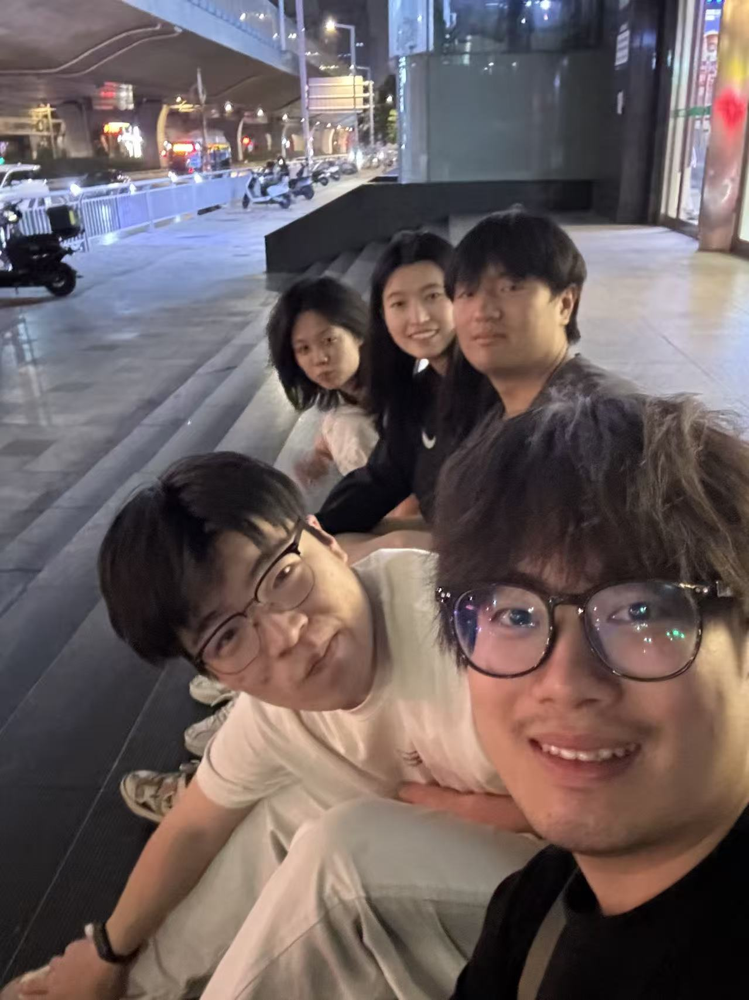

FOR FRIENDS IN CHINA
我真的
想你们了
这页就是证据
人在国外，时差和距离会拉长路程， 但你们一直是我日常里最靠近的一部分。 有些想念不需要解释，点开这一页，就已经说明一切。
人在远方，心却常常在你们身边落座。
等下次重逢，我们把没聊完的日常，一口气聊到凌晨。

这页就是证据
人在国外，时差和距离会拉长路程， 但你们一直是我日常里最靠近的一部分。 有些想念不需要解释，点开这一页，就已经说明一切。
人在远方，心却常常在你们身边落座。
等下次重逢，我们把没聊完的日常，一口气聊到凌晨。